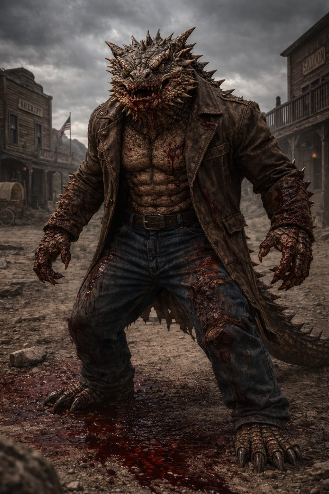

Texas Horned Lizard
Phrynosoma cornutum
Region: Southwestern United States and Northern Mexico
Habitat: Arid plains, scrublands, rocky deserts and open dry terrain
Martial Representation: Rough and Tumble
The Texas Horned Lizard is a brutal close-range brawler built around toughness, sudden bursts and punishing physical disruption. Stocky, spiny and difficult to handle cleanly, it thrives in chaotic exchanges where pressure, pain tolerance and explosive commitment matter more than refined movement. In combat, it overwhelms through violent collisions, ugly scrambles and relentless short-range aggression.
Martial Discipline Overview
Rough and Tumble was a historically brutal fighting method associated with unregulated close-quarters violence in early America. Focused on raw survival, it emphasized savage grappling, destabilization, mauling pressure and total dominance in dirty range. Within WAFT, it reinforces explosiveness, resilience and vicious close-contact offense over elegance or formal structure.
Combat Attributes
Combat Abilities
Passive Ability
Blood Pressure
Each time the opponent misses, Texas Horned Lizard gains +5% damage, up to a maximum of +30%.
If the opponent lands a hit, all accumulated bonus damage is reset.
Special Attack
Ocular Spray
Reduces the opponent’s hit chance by 50% for that turn and applies Blindness.
Blindness: −25% Precision and prevents the use of Special Attacks for 2 turns.
Ultimate Charge: Reactive (3 misses)